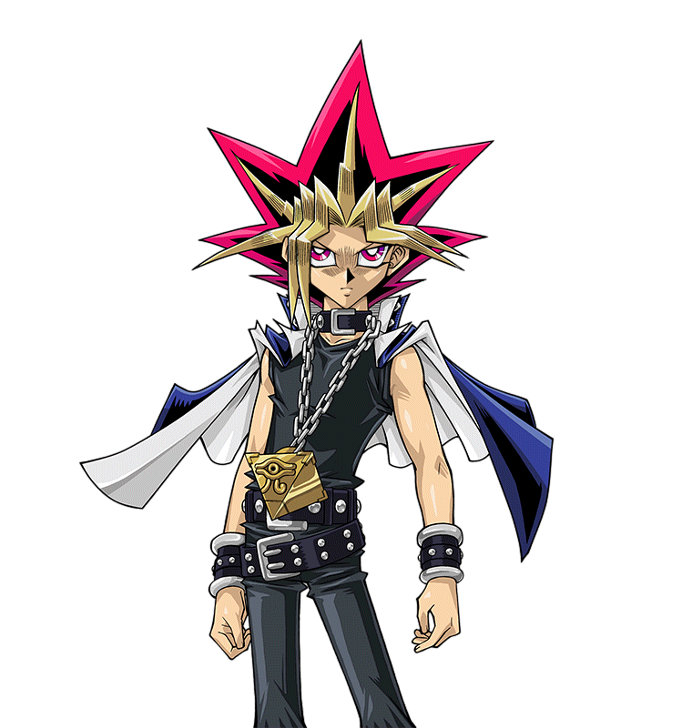
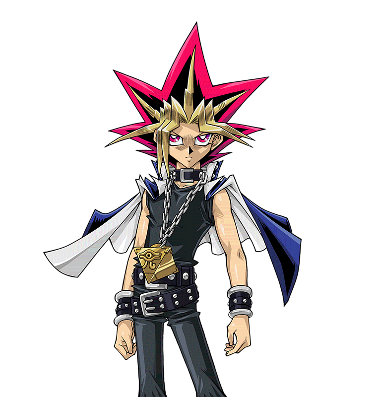
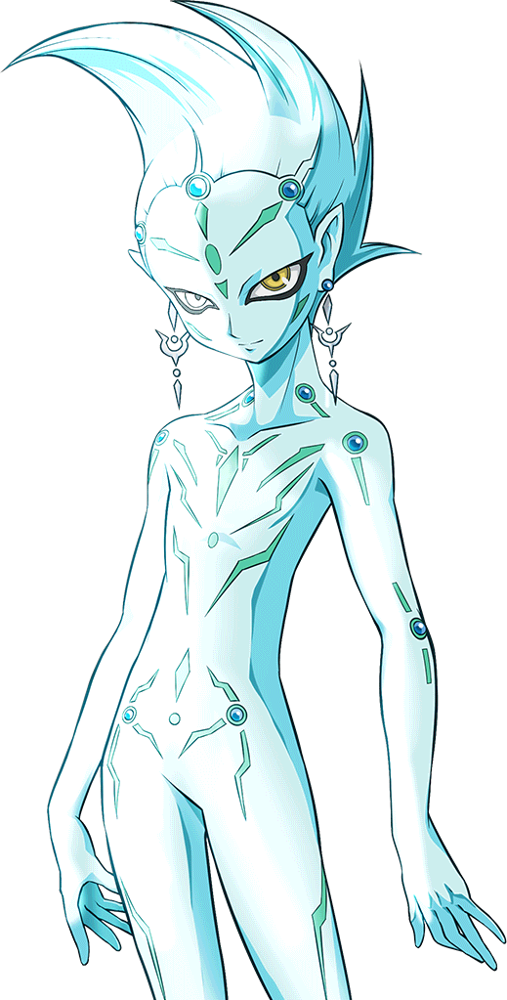

.png) couldn't believe what had just happened. He was about to seal the traitor Shiunin Sora
couldn't believe what had just happened. He was about to seal the traitor Shiunin Sora into a card, but then this stranger came out of nowhere and protected him.
into a card, but then this stranger came out of nowhere and protected him.
Edo Phoenix
couldn't believe what had just happened. He was about to seal the traitor Shiunin Sora
into a card, but then this stranger came out of nowhere and protected him.
Edo: Where did this guy come from?! How did he protect Sora from being sealed into a card?! And how in the hell did HE not get carded himself?!
Edo couldn't answer any of those questions. It was impossible to stop someone from being sealed once the process started. Or rather, it was supposed to be impossible.
Yuzu and Sora stared dumbfounded at
Yugi 's sudden appearance.
They never imagined that he would turn up when they needed help the most.
and Sora stared dumbfounded at
Yugi 's sudden appearance.
They never imagined that he would turn up when they needed help the most.
Yuzu: First Yugi appeared to save
Yuya , and now he's here to help me and Sora. How did he even know?
, and now he's here to help me and Sora. How did he even know?
Yuzu asked herself, completely bewildered. Sora had similar thoughts, wondering just how he stopped Edo from carding him.
Yugi Muto , now merged with the soul of
Atem,
gazed upon the surprised pair he just helped.
, now merged with the soul of
Atem,
gazed upon the surprised pair he just helped.
Atem (Yami Yugi): Yuzu, Sora, are you two alright?
He asked. Even his voice sounded stronger than normal, surprising them even more.
Yuzu: I-I'm okay.
Yuzu said in a slightly shaky voice.
Sora: I may look a little banged up, but I'll manage.
Sora said as he struggled to get back up. Yuzu quickly moved to help him.
Sora: Thanks for saving me, by the way.
Yugi smiled.
Atem (Yami Yugi): You are welcome. I should be thanking you for keeping Yuzu out of harms way. Now...
Yugi said as he refocused his attention on Edo.
Atem (Yami Yugi): Yuzu, you take Sora and stay back. I will handle this.
Though stunned and confused by his sudden change, Yuzu nodded as she and Sora move to a huge crate beside the warehouse entrance. Edo finally regained his own voice at this point.
Edo: Who are you?! Identify yourself!
He demanded of his new acquaintance.
Atem (Yami Yugi): I am Muto Yugi, and I've come to stop
Akaba Leo from taking Yuzu Hiragi! Your fight is with me now, Edo Phoenix!
from taking Yuzu Hiragi! Your fight is with me now, Edo Phoenix!
Yugi strongly declared as he activated his Duel Disk. The trio present were surprised even further.
Yuzu: Yugi's here... to protect me?
Yuzu asked herself.
Sora: What? How did he know about the Professor's plan? How does he even know about the Professor to begin with?
Sora asked himself in his mind. Edo was just as shocked by Yugi's declaration.
Edo: Protect Yuzu? How do you even know...?
Edo then came to a shocking realization as he gasped.
Edo: It's you! You're the Duelist I've been warned about! You are Yuzu's real protector, not Sora!
Edo exclaimed. Yugi's only reply was a confident smile, which infuriated the Commander-In-Chief.
Sora: He what?
Sora couldn't help but ask aloud. Yuzu was just as stumped as he was.
Atem (Yami Yugi): It's time to duel, Edo! Face me!
Yugi challenged. Edo sneered as he also activated his Duel Disk in response.
Edo: Things may not have gone as planned, but I WILL win in the end! Prepare to be destroyed, Yugi Muto!
The energy could be felt from both combatants as their epic battle began.
Edo: I will go first! My turn!
Turn 1: (Atem (Yami Yugi): 4000 LP / Main: 5)(Edo: 4000 LP / Main: 5)
Edo: I Summon
“Destiny HERO Drillguy ”.
”.
An orange and black creature covered in drills now stood before it's enemy.
Edo: I Set 2 cards facedown and end my turn!
Now show me why I should take you seriously!
Edo demanded angrily.
Atem (Yami Yugi): As you wish. My turn! Draw!
Turn 2: (Atem (Yami Yugi): 4000 LP / Main: 6)(Edo: 4000 LP / Main: 2)
Yugi and Atem began to see a way to take down their opponent… and maybe rattle him a bit. But first they need to buy a little time.
Atem (Yami Yugi): First, I play
“Goyoku na Tsubo ”
. This allows me to draw 2 more cards from my Deck!
”
. This allows me to draw 2 more cards from my Deck!
Then I Set 5 cards facedown, and end my turn.
This move confused everyone.
Yuzu: He only Set cards, but not Summon any Monsters?
Yuzu asked, bewildered.
Sora: What's he up to?
Sora questioned. Edo snorted.
Edo: No Monster to protect you? How disappointing. My turn! Draw!
Turn 3: (Atem (Yami Yugi): 4000 LP / Main: 2)(Edo: 4000 LP / Main: 3)
Edo didn't hesitate for his next move.
Edo: I activate
“Yugo ”
to Fuse “Destiny HERO Drillguy ”
on my Field with “Destiny HERO Decisionguy
”
to Fuse “Destiny HERO Drillguy ”
on my Field with “Destiny HERO Decisionguy ”
in my hand for a Fusion Summon! Two heroes drilling the bedrock of destiny. Now become one and reign in the pitch-black future! Fusion Summon! Come on!
“Destiny HERO Dystopiaguy ” !
”
in my hand for a Fusion Summon! Two heroes drilling the bedrock of destiny. Now become one and reign in the pitch-black future! Fusion Summon! Come on!
“Destiny HERO Dystopiaguy ” !
Edo's ace Monster was a dark purple warrior wearing a golden mask that had a big red "D" on it.
Yuzu: Is that his ace Monster?
Yuzu asked.
Sora: Yeah, and it's a brutal one.
Sora replied, making Yuzu more concerned for Yugi.
Edo: “Dystopiaguy ”
's Monster Effect activates! When it is Fusion Summoned, I can inflict Damage to you equal to the Attack Points of one of it's Fusion Materials!
“Drillguy ”
's Attack Power was 1600, so that's how many Life Points you've just lost! Squeeze Palm!
Dystopiaguy's fist fired a blast at Yugi, hoping to damage him. However
Atem (Yami Yugi): Not so fast! I activate the Effect of
“Clear Kuriboh ”
in my hand! When my opponent uses a Monster Effect to damage my Life Points, I can negate that Effect by sending
“Clear Kuriboh
”
in my hand! When my opponent uses a Monster Effect to damage my Life Points, I can negate that Effect by sending
“Clear Kuriboh ”
from my hand to the Graveyard!
“Dystopiaguy ”
's Effect has been nullified, thanks to my furry friend!
”
from my hand to the Graveyard!
“Dystopiaguy ”
's Effect has been nullified, thanks to my furry friend!
A cute, purple fluffy creature intercepted Dystopiaguy's fist and pushed it back. Edo cursed for that setback.
Edo: Dammit! He had a card like that in his hand?!
He said in frustration.
Yuzu: That was close.
Yuzu commented, with Sora nodding in agreement.
Atem (Yami Yugi): Sorry Edo, but you'll have to do better than that!
Yugi said confidently, which made Edo growl.
Edo: Don't get cocky! Battle! “Dystopiaguy ” , Direct Attack! Dystopia Blow!
Yuzu and Sora watched as Edo's Monster zoomed forward to strike at Yugi. Only that didn't quite work either.
Atem (Yami Yugi): I activate
“Clear Kuriboh ”
's other Effect! When my opponent's Monster is about to attack me directly, I can banish
”
's other Effect! When my opponent's Monster is about to attack me directly, I can banish
“Clear Kuriboh ”
from my Graveyard to draw 1 card from my Deck! If it is a Monster, I can Special Summon it to my Field and have your Monster attack it instead! Now, I draw!
”
from my Graveyard to draw 1 card from my Deck! If it is a Monster, I can Special Summon it to my Field and have your Monster attack it instead! Now, I draw!
Yugi then drew his card, and smiled.
Atem (Yami Yugi): I have drawn the Monster called
“Bafometto ”
. Now I can Special Summon him to the Field in my defense! Come,
”
. Now I can Special Summon him to the Field in my defense! Come,
“Bafometto ”
.
The Attack Mode Monster Yugi brought out looked like a brown skinned demon with four arms, two horns on it's head, and a pair of wings. Edo cursed again loudly.
Edo: Grr, fine then!
“Dystopiaguy ”
, attack “Bafometto ”
! Smash it to pieces!
He yelled. Yugi and Atem both smirked. They were looking forward to this moment.
Atem (Yami Yugi): You've walked right into my Trap! Reverse card open...
“Magical Silk Hats ”
!
”
!
Just then, 5 black top hats with question marks on them covered Yugi's field, including his Monster.
Atem (Yami Yugi): Now you have to choose which hat my Monster is hiding under! Be careful; those hats hide more than just my
“Bafometto ”.
Yugi warned while still smirking.
Edo gasped in shock. That shock was soon overcome by intense anger.
Edo: That card! It's like the one he used!
He recalled a scene from his recent past during a Duel with a man that used a Trap similar to Yugi's. That man was the reason he was so reluctant to leave the Xyz Dimension. If it hadn't been a direct order from the Professor himself, Edo wouldn't be here dealing with a girl he could see no importance to the Arc Area Project. He couldn't believe someone had the nerve to play a card like his! Yuzu was just as surprised, but unlike Edo she had no grudge against the man she knew.
Yuzu: Magical Hats? Could it be?
Yuzu asked herself in wonder. Edo, however, couldn't contain his fury.
Edo: Why do you have that card?! Are you an ally of
Sakaki Yusho ?
?
Edo furiously demanded. Yuzu gasped loudly and covered her mouth.
Yuzu: Did he say Yusho Sakaki?! Edo knows Yuya's father?!
She asked herself, shocked by the revelation. No one had seen Yuya's missing father for three whole years. Yuzu wondered if Edo knew where he was.
Sora: Sakaki?
Sora questioned, surprised hearing that Edo knew someone with the same last name as Yuya.
Atem (Yami Yugi): I haven't had the pleasure of meeting him. Although, I'll admit I am a fan of his work.
Yugi answered, angering Edo even more.
Edo: A fan are you?! Well, he will be very disappointed to know that I've crushed you in this Duel! “Dystopiaguy ” , attack the hat on the far right!
He ordered. Dystopiaguy punched away said hat, only to find not Yugi's Monster, but a nasty surprise underneath.
Atem (Yami Yugi): Wrong hat! You've trigged my Trap Card:
“Magic Cylinder ”
!
Now your attack is negated and damage equal to your Monster's Attack Points will be directed to you!
”
!
Now your attack is negated and damage equal to your Monster's Attack Points will be directed to you!
Yugi stated as the his Trap surged at Edo.
Edo: You wish! I activate the Effect of
“Destiny HERO Decisionguy ”
in my Graveyard! When my opponent uses an Effect that would damage my Life Points during the turn he was sent to the Graveyard, I can return
“Decisionguy ”
to my hand to negate the damage!
Well played.
Atem (Yami Yugi): Bien joué.
Yugi said, impressed.
Edo: I actually wanted to Summon
“Dystopiaguy ”
earlier to inflict some damage sooner, but I didn't want to waste an opportunity to protect myself if a situation like this came up. I may be pissed, but I'm not
stupid, Yugi!
Edo revealed.
Atem (Yami Yugi): Glad to hear that. But this Duel is still far from over.
Yugi replied.
Edo: It will be for you soon! I play the Spell Card
“Destiny Draw ”
. which allows me to draw two cards from my Deck by discarding a "Destiny Hero" in my hand!
I'm sending “Decisionguy ”
back to the Graveyard for two new cards! Now I activate a continuous Spell card,
“D Death Match ”.
This card will not only let me damage you, but also will get rid of your damned Hat Trap and make my Monster stronger! First, once per turn, during the End Phase...!
But before Edo could explain his Magic card's Effect, Yugi pulled out another surprise for his opponent.
Atem (Yami Yugi): That will do you no good! I activate another Trap,
“Magic Jammer ”
! By sending the last card in my hand to the Graveyard, your Magic card is negated and destroyed!
”
! By sending the last card in my hand to the Graveyard, your Magic card is negated and destroyed!
Edo: Damn you!
Edo shouted, pissed that Yugi outsmarted him again.
He declared reluctantly. Both Yuzu and Sora were impressed so far by Yugi's Dueling skills.
Yuzu: Yugi is good.
Yuzu said in amazement. She wished Yuya were here to see this.
Sora: Yeah, really good. But will he actually win?
Sora asked, still not certain Yugi can take down Academia's Commander-In-Chief. True, while Yugi seemed prepared for anything Edo can throw at him, he still had yet to Summon a Monster strong enough to defeat Dystopiaguy. Plus, he had no more cards in his hand. If he didn't draw something good on his next turn, he could be done for. Yugi and Atem thought the same thing.
Yugi: Mou Hitori no Boku, we have to draw the card we need to win the Duel now!
Yugi said in his thoughts.
Atem (Yami Yugi): Yes, we must. We have to defeat Edo to keep Yuzu and Sora safe. The time to act is now! Respond me, my deck !
The Pharaoh replied as he was about to draw.
Atem (Yami Yugi): My turn! Draw!
He looked to see what he had drawn, and had hope.
Atem (Yami Yugi): I play,
“Ten yori no Hosatsu ”
! This allows us both to draw from our Decks until we hold 6 cards in our hands!
”
! This allows us both to draw from our Decks until we hold 6 cards in our hands!
After they and Edo drew their 6 cards, Yugi and Atem smiled at one another and nodded in unison. It was time to defeat Edo.
Atem (Yami Yugi): Now I play,
“Yugo Kaijo ”
!
This lets me send your Fusion Monster back to your Extra Deck and replace it with the Monsters you used to Summon it!
”
!
This lets me send your Fusion Monster back to your Extra Deck and replace it with the Monsters you used to Summon it!
Edo watched as Destiny Heroes, “Drillguy ”
and “Decisionguy ”
reappeared on his Field. “Decisionguy ”
who looked like a humanoid sea creature in a dark green and grey suit, stood with it's fellow Monster.
This time, Edo didn't seem so perturbed.
Edo: I thought you'd might try something like that. Trap card open,
“D Fusion ”
! This allows me to Summon a Fusion Monster using the Monsters I control! I Fuse
“Drillguy ”
and “Decisionguy ”
to once again Fusion Summon “Dystopiaguy ”
!
Not only is “Dystopiaguy ”
back, but “D Fusion ”
also protects it from being destroyed by battle or card effects this turn!
And just like last time,
“Dystopiaguy ”
's damage inflicting Effect activates! Squeeze Palm!
“Dystopiaguy ” once again squeezed it's fist and sent a blast to damage Yugi. This time, though, it looked like it succeeded as Yugi was hit and got covered by smoke.
Yuzu: Yugi!
Yuzu shouted in worry. Sora just stared at the smoke cloud, waiting to see Yugi's condition.
Edo: Finally, I got you!
Edo said, sounding a little smug now that he finally hit Yugi's Life Points.
Atem (Yami Yugi): Not as much as you think!
Yugi called out as the smoke cleared, revealing him to not be hurt as Edo and Sora expected. Also, his Life Points didn't lower much either.
(Atem (Yami Yugi): 3400 LP)
Edo: What? His Life Points only took 600 points of Damage! He should've taken more than that!
Edo shouted in surprise.
Atem (Yami Yugi): ABefore your Monster's Effect reached me, I activated
“Hijoshoku ”
! This Quick-Play Magic card increased my Life Points by 1000 for each Magic and Trap card I have sent to the Graveyard other than itself!
”
! This Quick-Play Magic card increased my Life Points by 1000 for each Magic and Trap card I have sent to the Graveyard other than itself!
I sent my remaining facedown card to the Graveyard to make my Life Points 5000, and then I lost 1600 due to
“Dystopiaguy ”
's Effect.
(Atem (Yami Yugi): 4000 LP + 1000 LP - 1600 LP = 3400 LP)
Edo's own fist shook.
Edo: You're really getting under my skin, Yugi! All those tricks of yours! And still, you have nothing that can beat my now indestructible
“Dystopiaguy ”
! All you've been doing is prolonging your own defeat! You can't win!
Edo stated. Yugi, however, remained confident.
Atem (Yami Yugi): Wrong, Edo. I CAN win, and I will! For I now have what I need to rid the Field of your Monster and strike you down this turn!
Yugi boldly declared while pointing at the unconvinced Edo.
Edo: You're bluffing! You can't destroy my Monster thanks to my Trap card! You can't do anything!
Atem (Yami Yugi): PAllow me to prove otherwise! First, I Sacrifice
“Bafometto ”
to Advance Summon this card. Come
“Black Magician Girl ”
!
”
!
A cute blonde girl in a blue Magician outfit wielding a staff appeared on the Field in Berfomet's place.
Sora: Oh, I like her!
Sora said, staring at Yugi's newest Monster with glee.
Yuzu: Me too. She's so pretty.
Yuzu said, admiring the new magician's look.
Edo: I'm not impressed. She has lower Attack Power than my Monster!
Edo shouted pointed out.
Atem (Yami Yugi): I'm just getting started. Now I can finally Summon the Monster that will allow me to clear your Field! In order for me to Special Summon this
powerful creature, I need to banish one LIGHT Monster and one DARK Monster from my Graveyard!
Yugi replied. At this, Edo interrupted again.
Edo: But you don't have any LIGHT Monsters in your Graveyard!
“Clear Kuriboh ”
was the only one you had, and you banished it earlier!
”
was the only one you had, and you banished it earlier!
Yugi smirked at him.
Atem (Yami Yugi): Wrong again Edo. I have sent another one there not too long ago.
He pointed out.
Edo: Since when? Wait... !
Edo then understood what Yugi had been getting at. Before Edo ended his previous turn, his “D Death Match ” card was negated and destroyed by Yugi's Trap. A Trap that needed a card sent from his opponent's hand to the Graveyard...
Edo: Don't tell me!
He gasped.
Atem (Yami Yugi): That's right! The card I discarded when I played my
“Magic Jammer ”
was a LIGHT Monster called
“Watapon ”
. Now I banish it and my DARK “Bafometto ”
to Special Summon this monster!
One soul shall merge with light! The other soul shall merge with the darkness! Between light and darkness, the gate to chaos is opened! Descends on the Earth!
”
. Now I banish it and my DARK “Bafometto ”
to Special Summon this monster!
One soul shall merge with light! The other soul shall merge with the darkness! Between light and darkness, the gate to chaos is opened! Descends on the Earth!
“Chaos Soldier Kaibyaku no Shisha ”
!
”
!
Yugi's Soldier appeared to be a tall man wearing dark blue and gold armor holding a sword in one hand and a shield in the other.

Yuzu and Sora: Cool!
Both Yuzu and Sora exclaimed excitedly. Even Edo was a little intimidated by the new Monster.
Edo: So what? Even if your Monster is stronger than mine, it still can't destroy “Dystopiaguy ” in battle! And any card destroying effects it may have won't work either! It is still useless!
Edo said again. Yugi smirked and gave a small chuckle.
Edo: What's so funny?!
Atem (Yami Yugi): Edo, throughout this Duel I have not once said I planned to "destroy" your Monster. That was just an assumption on your part, and a wrong one at
that. For you see… your Destiny Hero wasn't "destined" to be destroyed at all. It's fate is entirely different.
Yugi said, making Edo nervous at this point.
Edo: What are you talking about?
He said in a shaky voice.
Atem (Yami Yugi): This! I activate the Effect of
“Chaos Soldier ”
! Once per turn, I can banish one Monster on the Field! Your
“Destiny HERO Dystopiaguy ”
... is gone!
Edo: NO!
Edo cried out as he watched his Monster vanished from sight. Yuzu and Sora were in awe of this.
Sora: Yugi did it! Edo's Monster is no longer protecting him! Yugi can attack him now!
Sora said. Yuzu nodded in agreement.
Atem (Yami Yugi): Your
“D Fusion ”
may have protected your Monster from destruction, but not from banishment! However, due to using this Effect,
“Chaos Soldier ”
cannot attack this turn. That is why, with “Dystopiaguy ”
finally gone, I can at last bring out my favorite Monster to help end this Duel!
Yuzu, Sora and Edo: Your favorite?
Everyone asked.
Atem (Yami Yugi): When I have
“Black Magician Girl ”
on my Field, I can activate a Magic card called
“Kenja no Hoseki ”
.
This allows me to Special Summon the Monster closest to my heart from my Deck! Come forth...
“Black Magician
”
.
This allows me to Special Summon the Monster closest to my heart from my Deck! Come forth...
“Black Magician "
!
"
!
A man dressed in purple garb and held a scepter now stood beside it's fellow Magician.
Yuzu: So that's Yugi's Ace? I wonder why that card means so much to him...
Yuzu asked herself, curious.
Edo stood there, not believing this was happening.
Edo: Damn him! He has two Special Summoned Monsters now, but with
“Dystopiaguy ”
banished, I can't use my trap
“D Hyper Nova ”
! His
”
! His
“Bafometto ”
was Special Summoned, but he got rid of it for his
“Black Magician Girl ”
, which wasn't Special Summoned! If I still had my Destiny Hero,
“D Hyper Nova ”
would've destroyed all his Special Summoned Monsters this turn! Now he's... he's got me!
Edo realized with horror.
Edo: You've planned this all along, didn't you?!
Edo yelled angrily. Yugi smiled more, further infuriating him.
Atem (Yami Yugi): I like to plan ahead. Now my Magicians, attack Edo Phoenix directly!
Black Magic!
Black Burning!
Together, “Black Magician "
and “Black Magician Girl ”
fired violet energy blasts from their weapons right at Edo, defeating him in one blow. Edo dropped to one knee from the combined assault.
(Edo: 4000 LP - 2500 LP - 2000 LP = 0 LP)
Yuzu: Yugi won!
Yuzu shouted in joy.
Sora: Man, he really is a pro.
Sora said, sounding impressed.
As he kneeled and stared down at the ground, Edo gritted his teeth, not believing he lost to some nobody. He was one of Academia's best, and yet this kept happening to him. First Yusho Sakaki, now this guy. He fought and lost against them both.
Edo: Why... Why do I keep losing to bastards like you?
He asked, seething with anger.
Atem (Yami Yugi): Because you fight on the wrong side for all the wrong reasons. Some of which you don't even understand.
Yugi said to his defeated opponent. Edo then got back on his feet and stared back at him, defiant.
Edo: What? What do I not understand?
Atem (Yami Yugi): To begin with, your reasons for attacking the Xyz Dimension. The people there were innocent and lived their lives in peace, until Leo Akaba sent
his soldiers to take everything away from them, with you leading the charge! You think what Academia is doing is noble and for a great purpose, but that couldn't
be further from the truth! What Leo really did was commit an atrocity! There is nothing "noble" about stealing the lives of people and destroying what they hold
most dear!
Yugi said, his own anger showing itself.
Yuzu: Attacking?! Stealing lives?! Sora, what is Yugi talking about?!
A shocked Yuzu asked her friend, who looked away without saying a word. This really made her even more confused. Edo's fury still hadn't subsided.
Edo: You sound just like him! Yusho Sakaki tried to spew such nonsense to me! But he...
Yuzu: Hey! How do you know Sakaki Yusho? Where is he?!
Yuzu demanded, which surprised Edo.
Edo: You know him too?
Edo asked, curiosity now mixed with his anger.
Yuzu: He used to live here, but then he disappeared three years ago! No one knows where he is now! Do you?
Yuzu asked, hoping Edo would have an answer. Sadly, that wasn't the case.
Edo: I dueled Yusho not long ago, but after I lost to him he somehow vanished on the spot. I've been trying to find him ever since, wanting to prove to him that the Professor's teachings are the correct path to peace! Making people smile through Duels is just ridiculous!
Yuzu: That is not true!
Yuzu retorted, angered and sad that she still didn't know where Yuya's father was or what's become of him.
Yuzu: From what I just heard from Yugi, this Professor person sounds like a real monster!
Edo: Enough! I have my orders, and I will not turn away now!
He then pushed a button on top of his Duel Disk. Instantly, over two dozen
Obelisk Force soldiers materialized around Yugi, Yuzu, and Sora. They were surrounded!
soldiers materialized around Yugi, Yuzu, and Sora. They were surrounded!
Sora: What the hell?!
Sora yelled in surprise.
Edo: The Professor gave me all of them as backup, just in case the plan went south! He wanted to insure Yuzu didn't escape before Yuri comes to take her. Which reminds me...
He then pushed another button.
Edo: I've just now given Yuri the signal to come here. He will arrive soon to take you to Academia, Hiragi Yuzu.
Atem (Yami Yugi): Never!
Yugi shouted in defiance.
Yuzu: You're still using other people to do things for you?! Coward!
Yuzu called him again. Edo snapped back at her.
Edo: I told you before, I'm just following the Professor's orders!
Yuzu: That doesn't justify anything!
Yuzu protested.
Edo: I said that's enough! Obelisk Force, deal with Yugi Muto and Sora Shiunin! Do not let Yuzu Hiragi escape, but don't harm her!
Edo ordered as the Obelisk Force moved in to take their prey down. Unfortunately for the Obelisk Force...
Edo, Yuzu, and Sora looked in surprise to see three Monsters they've never seen before had shown up and as one, they assaulted all the Obelisk Force soldiers in the area. Yugi and Atem grinned in triumph.
Obelisk Force : What?!
One of them said before he and his comrades were beaten to a pulp by
“Elemental HERO Neos ".
Several more were hit by a sparkling energy blast from the mouth of
“Stardust Dragon
".
Several more were hit by a sparkling energy blast from the mouth of
“Stardust Dragon ”.
All the remaining soldiers were slashed by the blades of
“Number 39: Kibo O Hope
”.
All the remaining soldiers were slashed by the blades of
“Number 39: Kibo O Hope ”.
Within seconds, the whole Obelisk Force was wiped out and automatically disappeared in blue sparkles, sending them back to Academia. The trio of Monsters had vanished
by that point. Edo was more dumbstruck than ever.
”.
Within seconds, the whole Obelisk Force was wiped out and automatically disappeared in blue sparkles, sending them back to Academia. The trio of Monsters had vanished
by that point. Edo was more dumbstruck than ever.
Judai: Oï! Yugi-san! We late to the party?
Yugi turned to see Yuki Judai ,
Fudo Yusei
,
Fudo Yusei and
Tsukumo Yuma
and
Tsukumo Yuma meeting up
with him, smiling. Yugi too smiled as he gave a thumbs up.
meeting up
with him, smiling. Yugi too smiled as he gave a thumbs up.
Atem (Yami Yugi): Actually, your timing couldn't be more perfect! Thank you!
The trio nodded in return, glad they made it in time.
Atem (Yami Yugi): Are the others safe?
He asked. The trio knew who he meant.
Yuma: They're both safe and sound!
Yuma said proudly.
Yusei: Same here.
Yusei added.
Judai: She's also safe.
Judai said, also with a thumbs up.
Sora: Who are these guys?
Sora asked, still stunned.
Yuzu: Yugi seems to know them. They must be friends of his.
Yuzu guessed, judging by how they interacted.
Edo: What's the meaning of this?!
Edo shouted in outrage. Yugi turned back to him and, as he did so, lifted his Duel Disk to point to it's center.
Atem (Yami Yugi): As I previously stated, I like to plan ahead. On my way here to confront you and protect Yuzu, I sent a distress signal to my friends here to give me a helping hand! I suspected Leo Akaba would have a plan to use the Obelisk Force to give you an unfair advantage, so... I wanted to have my own backup to deal with yours!
Edo was shocked that Yugi actually thought that far ahead. To prove it, his friends showed their own Duel Disks, each having a blinking red light in the center. Edo cursed under his breath at this.
Yuzu: Your Professor really is a heartless monster, isn't he?!
Yuzu yelled back.
Edo: You know nothing!
Edo protested, but Yugi wouldn't have it as he spoke again.
Atem (Yami Yugi): But I know everything, Edo! I even know the reason why Leo wants to capture Yuzu so much! A reason he did not share with anyone else!
This got everyone's attention.
Sora: He knows why the Professor is after Yuzu?
Sora asked softly. Yuzu gasped when she heard this too.
Edo: What reason?
Edo asked reluctantly. Despite his anger and frustration, he remained curious as to why the girl was so important to the Professor. If Yugi knew, maybe he could find out. The answer Yugi was about to give left Edo, Sora, and Yuzu in horrified shock.
Atem (Yami Yugi): Akaba Leo lost someone very important to him, and he plans to use Yuzu to bring back that person. However, the method he plans to do so will cost Yuzu her own life! I'm here to make sure that doesn't happen!
Yuzu began to pale and her body began to tremble. This Professor, Leo Akaba, plans to kill her?! Just so he could resurrect someone he lost?! She almost felt like throwing up. Sora's jaw had dropped and stared at Yuzu in renewed worry and panic. Edo's eyes widened with disbelief.
Edo: That... can't be true. That's just another one of your lies!
Edo said stubbornly. He could never imagine the Professor doing something like that.
Atem (Yami Yugi): Everything I have told you was the truth. You just need to accept it and see through the wrongness of Leo Akaba's actions.
Yugi said. At this point, his allies stepped up next to him.
Judai: Yeah man, Leo's the real villain here. I actually know someone back where I came from that was misled just like you were. He saw how wrong he had been. I know you can open your eyes too.
Judai had said, thinking of the Edo Phoenix of his world.
of his world.
Yusei: It's not too late for you. You can still do the right thing.
Yusei persisted.
Yuma: Totally! There's nothing wrong with using Duels to make people smile and feel happy! Yusho would've wanted that too. It's what he wanted for the all people
he taught, including a certain someone that I met recently.
Yuma said with Dennis on his mind.
Edo seemed more conflicted than ever. Deep inside, he wrestled with what he learned from the Professor and what Yusho Sakaki was trying to teach him. And now, Yugi and is friends actually tipped the scale more towards the latter. Also, what he heard about the Professor's desire with capturing Yuzu had cast some doubt about his objectives. He just didn't know what to do.
Defeated and confused, Edo pushed another button on his Duel Disk and disappeared like the Obelisk Force did. He had retreated.
Judai: He's gone.
Judai said.
Atem (Yami Yugi): Perhaps, but at least now he has plenty to think over.
Yugi replied, sounding hopeful. He then introduced his friends to Yuzu and Sora.
Atem (Yami Yugi): Yuzu, Sora, these are my friends and allies: Judai Yuki, Yusei Fudo, and Yuma Tsukumo. The four of us have been working together against Academia, and Akaba Leo.
Each of his friends said hi to the pair.
Yuzu: It is nice to meet all of you. Thanks for saving us, especially you Yugi.
Yuzu said politely.
Sora: Yeah, thanks. I'm just surprised you'd help save someone like me. I'm also with Academia you know.
Atem (Yami Yugi): That doesn't matter. The fact that you were willing to protect Yuzu despite knowing how Academia will react toward you showed you truly cared about her.
Yugi said, making the younger boy look away, uncertain of his future.
Above them on the warehouse roof, Dennis had seen and heard the whole thing. After leaving Yuri at their rendezvous point to wait for Edo's signal, Dennis headed back to see how things were going. He had returned just as Yugi defeated Edo in their Duel. He was very shocked that the plan had gone completely down the drain.
He too began to question himself after hearing about Yugi's accusations, the Professor's plans for Yuzu and especially what Yuma said about Yusho Sakaki. He needed time for himself to think, but first he needed to inform Yuri on this latest debacle. He then silently left to return to the rendezvous point.
Unbeknownst to Dennis, one member of Yugi's group did spot him spying from above. Being one of the only invisible people there, Astral was glad he had that benefit... aside from Pharaoh Atem that is.
Astral: We should get moving. I saw Dennis watching us and has just retreated.
He informed his friends.
Atem (Yami Yugi): He must be on his way to find Yuri. Edo did say he called him to come here for Yuzu.
Yugi pointed out.
Yuzu: Who is on his way? What do you mean?
Yuzu asked, both her and Sora looking confused.
Judai: Oh yeah, that's right. You guys can't see him. Well, we'll get that cleared up pretty soon.
Judai said.
Sora: Qui est-ce qu'on ne peut pas voir ?
Yusei: Another friend of ours. Only the four of us can see him, but you'll meet him before long. Right now, we need to go and...
Before Yusei could finish what he was saying, an unforeseen development had just occurred that alerted everyone.
Without warning, Yuzu's bracelet had started blinking pink light. This really surprised Yuzu and Sora.
had started blinking pink light. This really surprised Yuzu and Sora.
Sora: What's up with your bracelet?
Sora asked. A startled Yuzu shook her head, completely baffled.
Yuzu: I don't know. It's never done that before. Why is it doing that?
She then looked up to ask Yugi if he knew, but the look he had told her it wasn't a good thing. It was not just him. Judai, Yusei, Yuma, and even Astral (whom she couldn't see) looked extremely alarmed.
Yuzu: What's wrong Yugi?
Demanda Yuzu, qui semblait maintenant effrayée. Lui et ses amis se sont regardés et ont su instantanément ce que cela signifiait.
Atem (Yami Yugi): Yuzu, do you know if Yuya is still at his house?
Yugi asked urgently. This question stunned her and Sora.
Yuzu: Yuya? What's Yuya got to do with my bracelet?
What he said to her made her panic more than she had ever felt in her life.
Atem (Yami Yugi): I'm afraid that Yuya... is in terrible danger.